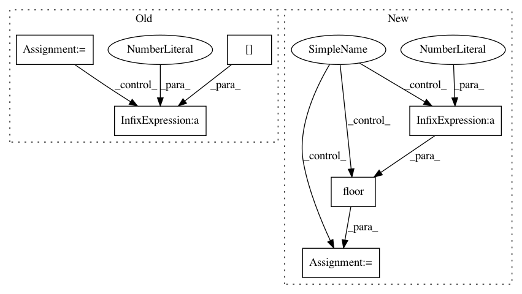

c8b28432a637a780eed96547260722ff3dede57e,niftynet/engine/sampler_selective.py,,rand_choice_coordinates,#Any#Any#Any#Any#Any#Any#,350
Before Change
for i in range(0, n_samples):
indices_to_add = candidates_indices[list_indices_fin[i]]
// print(max_coords.shape, indices_to_add)
for s in range(0, N_SPATIAL):
max_coords[i, s] = indices_to_add[s] - np.floor(
spatial_win_sizes[0]/2)[s]
// for i in range(0, N_SPATIAL):
// assert uniq_spatial_size[i] >= max_spatial_win[i], \
// "window size {} is larger than image size {}".format(
// max_spatial_win[i], uniq_spatial_size[i])
// max_coords[:, i] = np.random.randint(
// 0, max(uniq_spatial_size[i] - max_spatial_win[i], 1), n_samples)
// adjust max spatial coordinates based on each spatial window size
all_coordinates = {}
for mod in list(win_sizes):
win_size = win_sizes[mod][:N_SPATIAL]
half_win_diff = np.floor((max_spatial_win - win_size) / 2.0)
After Change
list_indices_fin = list_indices_fin[:n_samples]
max_coords = np.zeros((n_samples, N_SPATIAL), dtype=np.int32)
half_win = np.floor(np.asarray(win_sizes["image"]) / 2).astype(np.int)
for (i_sample, ind) in enumerate(list_indices_fin):
indices_to_add = candidates_indices[ind]
max_coords[i_sample, :N_SPATIAL] = \
indices_to_add[:N_SPATIAL] - half_win[:N_SPATIAL]
In pattern: SUPERPATTERN
Frequency: 3
Non-data size: 6
Instances
Project Name: NifTK/NiftyNet
Commit Name: c8b28432a637a780eed96547260722ff3dede57e
Time: 2017-10-04
Author: wenqi.li@ucl.ac.uk
File Name: niftynet/engine/sampler_selective.py
Class Name:
Method Name: rand_choice_coordinates
Project Name: ilastik/ilastik
Commit Name: f5bc12bdb54dfd6fecc8eb2b70cd294ef52b4f39
Time: 2014-01-03
Author: webmaster@burgerdev.de
File Name: ilastik/applets/thresholdTwoLevels/thresholdTwoLevelsGui.py
Class Name: ThresholdTwoLevelsGui
Method Name: _updateOperatorFromGui
Project Name: KrishnaswamyLab/PHATE
Commit Name: b912ae50a0ca1766eceb062973e2952997285fac
Time: 2018-04-04
Author: scottgigante@gmail.com
File Name: Python/phate/phate.py
Class Name: PHATE
Method Name: von_neumann_entropy